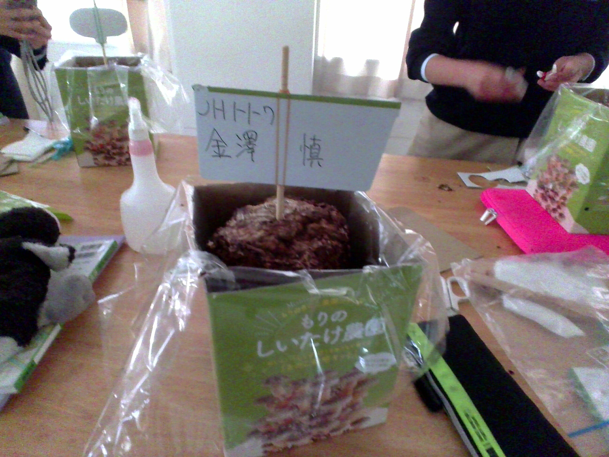
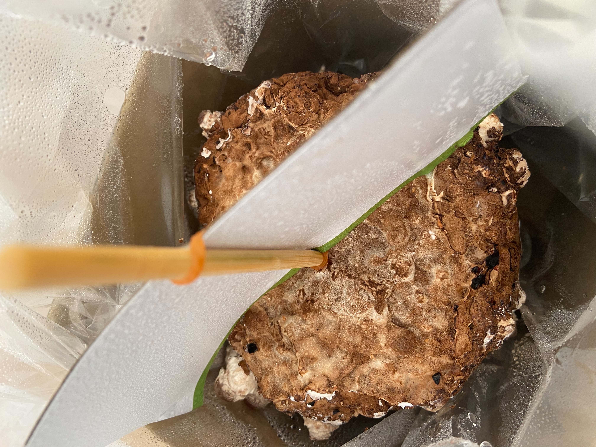
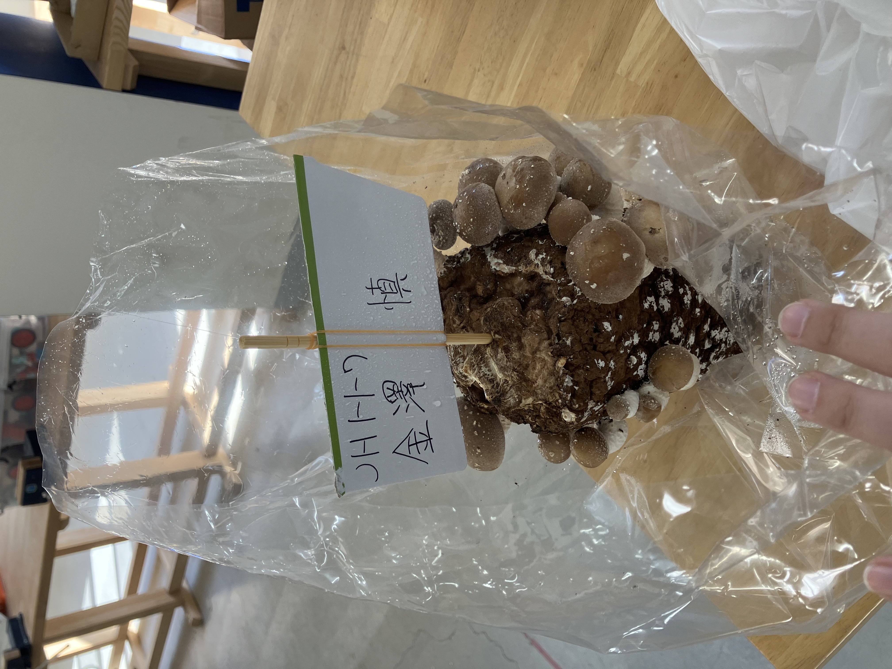
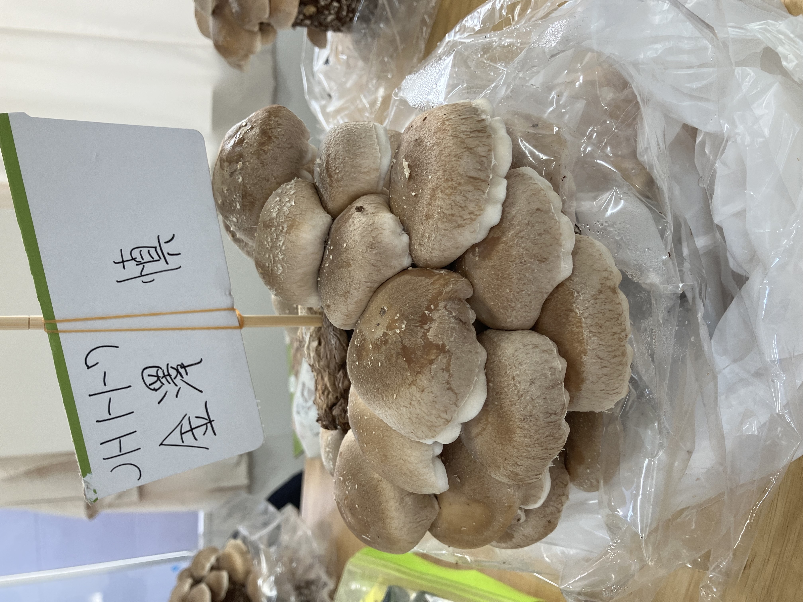
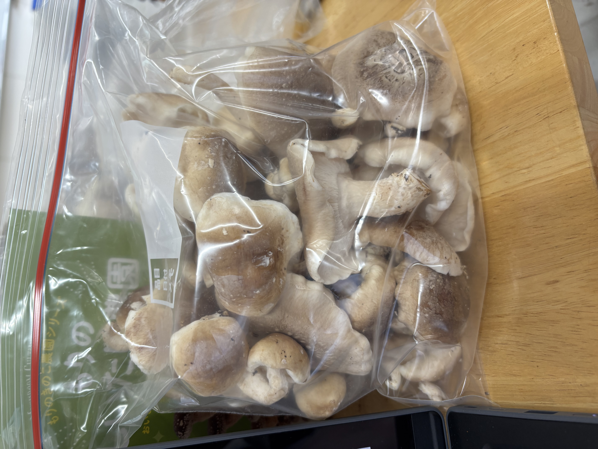

きのこを育てよう！
一番初めの水やり

水につけた菌床
二回目の水やり

小さい何かが出てきました！まだ、きのことはわからない大きさや形をしています
三回目の水やり

やっと、きのこと分かるようになりました！他の人のきのこくらいまでは大きくなりませんでした
収穫する前のきのこ

前と比べてすごく大きくなり、量も増えました！お店で売っているやつよりも大きくて美味しそうです
収穫したあとの菌床

収穫したあとのきのこ

感想
自分で育てたきのこで肉詰めを作ったんですけど、スーパーで売っているものよりもきのこの味が強かったんで、きのこ好きにはとても良かったです！
またきのこを個人でそだてて、もう一回食べたいです！